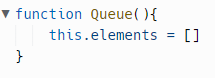
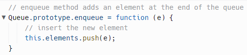
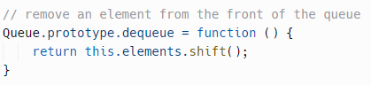
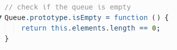
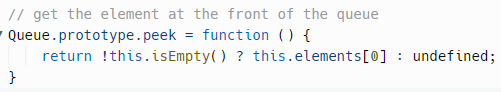
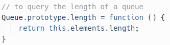
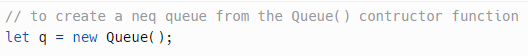
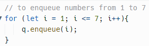
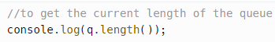
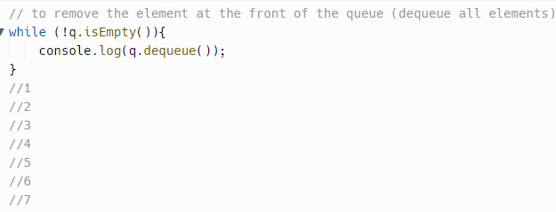

Fila são estruturas de dados bastante utilizadas na computação, onde o primeiro elemento a ser inserido, será também o primeiro a ser retirado. Desta forma, serão adicionados elementos no fim e removê-los pelo início.
A estrutura de dados fila segue um padrão conhecido como FIFO (first-in first-out), onde o primeiro a entrar é o primeiro a sair. Imagine o exemplo de um fila do banco, onde diversos usuários a compõe em uma manhã de sexta-feira. Um homem que chegou a fila às 7 da manhã se posiciona na fila. Como ele foi o primeiro a chegar, estará no início da fila, a partir daí todos os usuários do banco que chegarem terão que se posicionar depois do homem. Ao iniciar o atendimento, o primeiro usuário (início da fila) será atendido. Ao fazer isso, este sairá da fila e o elemento (usuário) que estava atrás deste passará a ser o início da fila. Este comportamento seguirá até que nenhum outro usuário se posicione ao final da fila e todos os usuários da fila sejam atendidos, tornando-a vazia.
Usando um array Você pode usar um array como uma fila, usando dois métodos do tipo Array. Adicione um novo elemento no final da fila (do array) usando o método push(). Essa ação é equivalente à operação de enfileiramento. Remova um elemento da frente de um array, usando o método shift(). Essa ação é o mesmo que a operação de desenfileiramento, ou seja, o primeiro é atendido e sai da fila.
A função construtora Queue() usa um array para armazenar seus elementos.
O método enqueue() adiciona um elemento no final da fila. Usamos o método push() do objeto array para inserir o novo elemento no final da fila.
O método dequeue() remove um elemento da fila. No método dequeue() usamos o método shift() do array para remover um elemento na frente da fila.
O método isEmpty() verifica se uma fila está vazia, conferindo se a propriedade length do array é zero.
O método peek() acessa o elemento na frente da fila, sem modificá-lo, apenas para conferir qual é.
Para consultar o comprimento de uma fila, desenvolvemos o método length():
Para criar uma nova fila a partir de uma função do construtor Queue(), use a palavra-chave new da seguinte forma:
Para enfileirar números de 1 a 7, use o seguinte método:
Para obter o elemento que está na frente da fila, use o método peek().

Para obter o comprimento atual da fila, use o método length(), como no exemplo a seguir:
Para remover todos os elemento que estão na fila, removendo sempre o que está na frente da fila, um por um, use o método dequeue(), da seguinte maneira:
São estruturas de dados que armazenam os elementos em um formato sequencial, empilhando um item acima do outro (imagine uma pilha de pratos, por exemplo). Estas estruturas permitem “empilhar” os itens que serão armazenados e “desempilhar” estes elementos da pilha quando precisarmos removê-lo. Sempre que um novo elemento é inserido (ou empilhado) damos a ele o nome de “topo”, pois é o primeiro elemento ao qual teremos acesso.
Segue um padrão conhecido como LIFO (Last In First Out), onde o último a entrar será o primeiro a sair. Imagine uma pilha de pratos, sempre que um prato é “empilhado” sob o outro, este último prato empilhado é o mais próximo (ou o topo da pilha) e, caso precisarmos remover um prato, é o prato do topo que será removido da estrutura.
O tipo Array do JavaScript fornece os métodos push() e pop() que permitem usar uma matriz (um array) como uma pilha (stack) de elementos. O push() retorna o valor da propriedade length que especifica o número de elementos de um array. Um array vazio denominado stack e adiciona cinco números, um por um, no final do array. É como colocar cada número no topo da pilha.
Remove o elemento final do array e retorna o elemento para o chamados. Se o array estiver vazio, o método retornará undefined. Como o retirar (estourar) elementos da parte superior da pilha usando o método pop().

Inicialmente, a stack possui 5 elementos. O método pop() remove o elemento do final do array, ou seja, do topo da pilha um de cada vez. Após 5 operações a pilha está vazia.